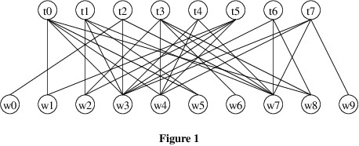
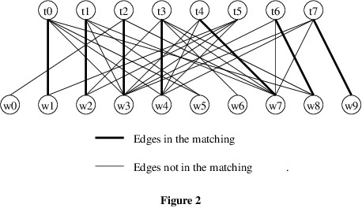
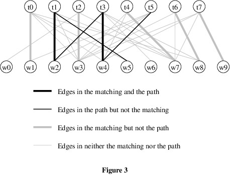
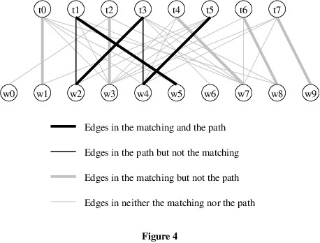
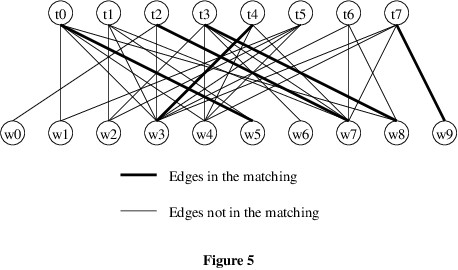
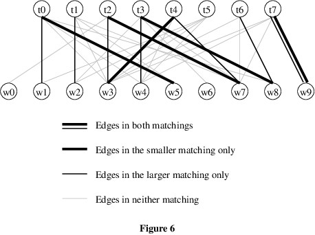
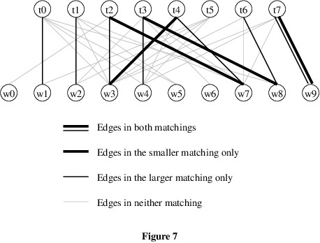
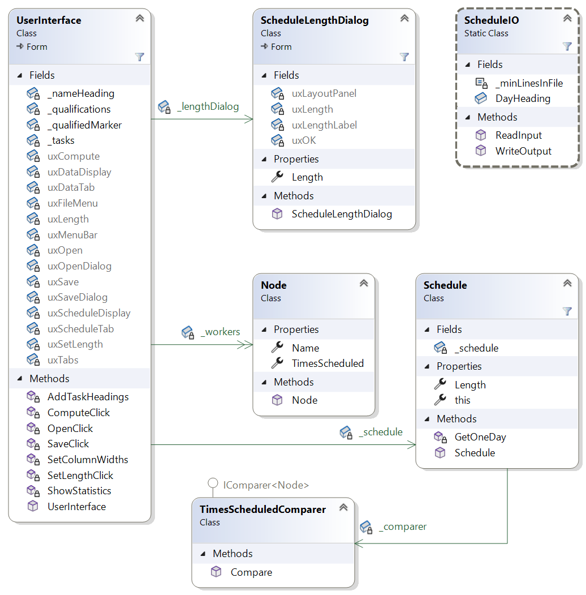

For this assignment, you will improve the solution to Homework Assignment 2 by doing a better job of balancing the workload and allowing more flexibility in assigning schedules.
Homework Assignment 6: Revised Task Scheduler0. Contents1. User Requirements2. Starting the Assignment3. User Interface4. Bipartite Matching4.1. Augmenting Paths4.2. When Augmenting Paths Exist4.3. The Matching Algorithm5. Software Architecture6. Data Structures6.1. The Bipartite Graph6.2. Dictionaries7. Coding Requirements7.1. The Node Class7.2. The TimesScheduledComparer Class7.3. The Schedule Class7.3.1. A method to initialize the number of times each given node has been scheduled7.3.2. The GetOneDay method7.3.3. The constructor7.4. The ScheduleIO Class7.4.1. The ReadInput method7.4.2. The WriteOutput method7.5. The UserInterface Class8. Performance and Testing9. Submitting Your Assignment
After using the program you wrote for Homework Assignment 2, the organization now would like the following modifications made:
Create a GitHub repository using the link provided in Canvas, and clone it to your local machine. This repository contains the model solution to Homework 2 with the Ksu.Cis300.LinkedListLibrary project from the model solution to Lab Assignment 11 and the Ksu.Cis300.Graphs project from the model solution to Lab Assignment 35 added. The files in the Data folder have been replaced by different input files.
The GUI should remain unchanged. The only differences in functionality are that the schedules produced will tend to balance the load better, and that workers will never be assigned to more than one task in a single day.
The solution strategy you will use is to model the problem as an instance bipartite matching. A bipartite graph is an undirected graph whose nodes are partitioned into two disjoint sets, and whose edges each connect a node from one of the sets to a node in the other set. For this problem, the nodes are the workers and the tasks, and the edges connect a worker with a task if that worker is qualified to do that task. For example, Figure 1 shows a bipartite graph for an instance with 10 workers and 8 tasks:

In the above instance, worker w0 is qualified only for task t2, w1 is qualified for t0 and t5, etc.
A matching in a bipartite graph is a subset of the edges in which no two edges meet at the same node. For example, a matching for the graph in Figure 1 is shown in Figure 2 below.

Our goal is to find a matching of maximum size. Such a matching gives an assignment of workers to tasks, maximizing the number of tasks filled (or equivalently, the number of workers assigned.)
Central to the bipartite matching algorithm is the notion of an augmenting path. Given a matching, an augmenting path for that matching is a path that:
For example, Figure 3 below shows an augmenting path (i.e., w5-t1-w2-t3-w4-t5) for the matching from Figure 2.

Because the edges in a bipartite graph each connect a node from one set to a node in the other set, any path will alternate between worker nodes and task nodes. Thus, every second edge in an augmenting path will come from the matching, but no other edge will. As a result, each node except the first and last in an augmenting path will be connected to one edge from the matching and one edge from the augmenting path, but not in the matching. Finally, because the path begins with a worker node and ends with a task node, the path will always contain one more edge that is not from the matching than edges that are from the matching. We can therefore obtain a larger matching by removing the edges that are in both the augmenting path and the matching, and adding the other edges from the augmenting path:

We therefore have the following facts about augmenting paths:
Fact 1: When we augment a matching using an augmenting path, the size of the matching increases by 1.
Fact 2: When we augment a matching using an augmenting path, all nodes in the original matching are in the resulting matching (possibly matched with different nodes).
We can learn a lot about augmenting paths by seeing what happens when we combine two matchings of different sizes. Consider, for example, the matching shown in Figure 5 below.

If we combine this matching with the larger matching from Figure 2, we obtain the following:

Because the edges come from two matchings, each node can be on at most two of these edges. These edges can therefore be partitioned into paths, with no two paths having nodes in common. These paths are of the following types:
Because the two matchings are of different sizes and each edge from either matching occurs in exactly one path, there must always be some path containing more edges from the larger matching than from the smaller matching; i.e., there must be a type-4 path with more edges from the larger matching. Such a path is an augmenting path for the smaller matching. We therefore have the following additional fact:
Fact 3: If a matching is not of maximum size, it has an augmenting path.
Finally, consider what happens if the nodes in the smaller matching all belong to the larger matching, as in Figure 7 below (t2, t3, t4, t7, w3, w7, w8, and w9 belong to both matchings, and t0, t1, t6, w1, w2, and w4 belong to the larger matching only).

Let w be a worker node that is in the larger matching but not the smaller matching (for example, let w be w4). Then w begins a non-cyclic path that starts with an edge from the larger matching. Because edges in the path alternate between the matchings, any time this path enters another worker node, it does so via an edge from the smaller matching. Because each node in the smaller matching is also in the larger matching, this path cannot end at a worker node - it continues via an edge from the larger matching. The end of this path must therefore be at a task node. Hence, this path is an augmenting path for the smaller matching. This gives us the following fact:
Fact 4: Let M be any matching, and let w be a worker node. Suppose that w is not in M. If there is a matching containing all the nodes of M, as well as w, then M has an augmenting path from w.
Based on the four facts derived above, we can now give an algorithm for finding a maximum-sized matching, while attempting to balance the workload of the workers. The overall strategy is to begin with an empty matching, then increase its size by finding augmenting paths.
To find an augmenting path from a given worker node, we can use breadth-first search (see Lab 34) with the following modifications:
For each augmenting path we find, we augment the matching as described in the Section 4.1. Augmenting Paths. Specifically, because the above algorithm for finding an augmenting path is based on breadth-first search, it builds a dictionary storing the path information it collects. This dictionary gives the predecessor of each node, starting with the end of the augmenting path (a task node) and ending at the start of the path (a worker node). We can therefore iterate through this path two nodes at a time, and each iteration except the last will take us to another task node (because the predecessor of the start node is itself, this process will end at the start node, which is a worker). On each iteration, we therefore match the current task node to its predecessor (a worker node). By Fact 1, this increases the size of the matching by 1.
As we search for augmenting paths, there is no need to start searching from any node more than once - if we find an augmenting path, this node will remain matched (Fact 2), and if we don't find one, no augmenting path will subsequently exist from this node (Facts 2 and 4). In order to try to achieve the desired balance, it therefore makes sense to consider the worker nodes in order of the number of times they have been scheduled.
The complete matching algorithm therefore is as follows:
Sort the workers by the number of times each node has been scheduled.
For each worker node:
Note that this algorithm does not necessarily give a schedule that is perfectly balanced. In fact, it sometimes can produce schedules that are less balanced than those produced by the solution to Homework 2. However, it does a good job of avoiding very poorly-balanced schedules.
The Ksu.Cis300.Scheduler namespace should contain five classes, as shown in the following class diagram:

The WorkerQueue and DoublyLinkedListCell classes from Homework Assignment 2 will not be used - you can remove them if they get in the way. You will need to make changes to the UserInterface, Schedule, ScheduleIO, and Worker classes, including renaming Worker to Node. The TimesScheduledComparer will be used to define how comparisons are done when sorting an array or list of Nodes. The ScheduleLengthDialog class won't need to be changed.
You will not need to make any changes to the Ksu.Cis300.Graphs or Ksu.Cis300.LinkedListLibrary namespaces. The types defined in these namespaces are not shown in the class diagram above.
This section discusses the major data structures your program will use. The code you will need to write to use these data structures is described in Section 7 Coding Requirements below.
You will store the workers' qualification information in a DirectedGraph<Node, bool>. You will not need to store any edge data, but a type parameter for the edge data is required. Because bool is a small type, it makes sense to use this type for the edge data. If a worker w is qualified for a task t, the graph should contain an edge from w to t. The data on these edges can be either true or false - it makes no difference which, as this data will not be used. Edges from tasks to workers don't need to be included because the modified breadth-first search uses edges from a matching to get from tasks to workers.
Several dictionaries will also be used in this program. Because the algorithm for finding an augmenting path is a modification of breadth-first search, it will use a Dictionary<Node, Node> to store the path information. Matchings will also be stored in Dictionary<Node, Node>s. Keys in these dictionaries will be matched task nodes, and the associated values for each key will be the worker node to which it is matched.
We use dictionaries because they provide quick lookups and can be modified quickly. Don't embarrass yourself by using a loop to look up a key - use indexing or the ContainsKey or TryGetValue method instead, whichever is appropriate. Iterate through a dictionary only when you need to process all keys and/or values in the dictionary.
Specific coding requirements for all classes in the Ksu.Cis300.Scheduler project are given in what follows. You do not need to use the same names as those given here or shown in the class diagram as long as you follow the naming conventions. In some cases, you are required to break the code into more private methods than what are described. You may include even more private methods if you believe that improves the code.
Rename your Worker class to Node, as it will now be used as any node in the graph - either a worker or a task. You will no longer need the _qualifications field or the IsQualified method, as this information will be stored elsewhere.
Modify the constructor so that it takes as its parameter a single string (i.e., not an array) giving the name of the worker/task, and remove all initialization code for _qualifications. Also remove the code that checks the length of this parameter.
This class should implement the IComparer<Node> interface. The only member it needs is the Compare method required by the interface. This method should take two Nodes as its parameters. If either Node is null, throw an ArgumentNullException. Otherwise, compare their TimesScheduled properties using one of these ints' CompareTo methods. The result of this call should be returned. Be sure to compare the TimesScheduled in the same order as the Nodes are provided in the parameter list.
You will need to add a private static readonly TimesScheduledComparer field, initialized to a new instance, to use for sorting the workers by their times scheduled. You will also need to modify the constructor and the two private methods and add at least three more private methods. The modifications to the constructor and the two provided methods are described in what follows.
You can modify the the GetQueue method to do this. You should rename it to reflect its changed functionality. It should return nothing - all references to a WorkerQueue should be removed.
The parameters to this method should be changed as follows:
After initializing the string[ ], get a maximum-sized matching for the graph using the algorithm given in Section 4.3. The Matching Algorithm. To sort the array of workers, use the Array.Sort method, passing the TimesScheduledComparer field as the second parameter.
After a maximum-sized matching has been found, modify the provided loop so that for each location in the array of tasks, the matching is used to determine whether a worker was scheduled for that task, and if so, which worker is scheduled.
You will need to change the constructor's parameter list as follows:
If either Node[ ] or the graph is null, throw an ArgumentNullException. If either of the arrays contains a null value or a node that is not contained within the graph, throw an ArgumentException. The only other changes you will need to make are to update the calls to the above methods to agree with the changes you made to these methods.
You will need to modify both public methods and add at least two private methods. The modifications to the public methods are described in what follows.
You will need to modify this method as follows:
You will need to change the type of the second parameter to Node[ ]. Then you will need to update the remainder of the method to reflect this change.
You will need to modify the _tasks field to be of type Node[ ]. You will also need to add a private field of type DirectedGraph<Node, bool> to store the bipartite graph of qualifications. Initialize this field to a new instance to avoid the need to make it nullable.
In addition, you will need to modify the code to reflect these changes to the fields and the changes to how public members of other classes are called. Syntax errors in your code should indicate where changes need to be made. Note that you will need to use the bipartite graph to determine whether a worker is qualified for a task.
Unit tests have been provided to test the Node, TimesScheduledComparer, and Schedule classes. You should first work on getting the provided unit tests to pass. Group the tests first by class, then by trait, and work through them alphabetically within these groupings.
The unit tests do not test the ScheduleIO or UserInterface classes. You will therefore need to do some interactive testing. Below are several specific tests you should run using input files from the Data folder. Be sure each matching is valid. The performance should be only slightly slower than the performance of the model solution to Homework 2.
Be sure to commit all your changes, then push your commits to your GitHub repository. Make sure the Ksu.Cis300.Scheduler folder in your repository contains all nine .cs files, as we can only grade what is present in the repository. Then submit the entire URL of the commit that you want graded.
Note: The repositories for the homework assignments for this class are set up to use GitHub's autograding feature to track push times. No actual testing/grading is done, but after each push, the GitHub page for the repository will show a green check mark on the line indicating the latest commit. Clicking that check mark will display a popup indicating that all checks have passed, regardless of whether your program works. You may also get an email indicating that all checks have passed. The only purpose for using the autograding feature in this way is to give us a backup indication of your push times in case you submitted your assignment incorrectly.